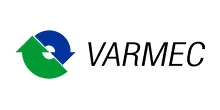

Поставляем оригинальные редукторы, мотор-редукторы и вариаторы Varmec под заказ — оригинал с гарантией производителя. Нужно дешевле — изготовим аналог собственного производства по присоединительным размерам. Цена и срок поставки — по запросу.
Оригинальные редукторы, мотор-редукторы и вариаторы Varmec — под заказ, с гарантией производителя. Пришлите модель или шильд — сообщим цену и срок поставки. Нужно дешевле — изготовим аналог (см. ниже).
| Серия Varmec | Назначение |
|---|---|
| RM / RMV | червячные редукторы |
| RB / RD | соосно-цилиндрические |
| RT | коническо-цилиндрические |
| RW | плоские цилиндрические |
| V / VS | механические вариаторы |
Точные типоразмеры — по каталогу производителя. Цена и наличие оригинала — по запросу. Не оферта.
Изготавливаем аналоги редукторов и мотор-редукторов Varmec под замену вышедшего из строя привода — по присоединительным размерам, валам и передаточному числу. Точную модель аналога подбираем по вашему шильду или чертежу.

| Что заменяем | Редукторы и мотор-редукторы Varmec |
|---|---|
| Наш аналог | Редукторы серии ZR (плоские цилиндрические, соосные) |
| Гарантия | 24 месяца |
| Подбор | По модели или шильду — за 15 минут |
Совпадают присоединительные размеры, валы и фланцы — узел встаёт на штатное место.
Вдвое выше среднерыночной.
Отгрузка со склада от 3 дней — не ждать импорт месяцами.
Пришлите фото шильда или модель — подберём аналог за 15 минут.
Подбор по типоразмеру: каждой модели Varmec соответствует наш редуктор серии ZR. Точную замену по вашей модели или шильду подтвердит инженер — пришлите шильд или опишите задачу.
| Модель Varmec | Наш аналог |
|---|---|
| Плоские цилиндрические мотор-редукторы | |
| RFV 252, RFV 253, RFV 302, RFV 303 | ZR 636 |
| RFV 352, RFV 353 | ZR 646 |
| RFV 402, RFV 403 | ZR 656, ZR 666 |
| RFV 502, RFV 503 | ZR 676 |
| Соосные мотор-редукторы | |
| RCV 202. 203. 252. 253 | ZR 939 |
| RCV 302. 303 352. 353 | ZR 949, ZR 959, ZR 969 |
| RCV 452. 453 | ZR 979 |
| RCV 552. 553 | ZR 989 |
| RCV 582. 583. 602. 603 | ZR 999, ZR 9109 |
Оставьте контакты или пришлите модель/шильд — инженер подберёт аналог, рассчитает присоединительные размеры и пришлёт КП.
Получить КПГабаритный аналог изготавливаем от 3 дней со склада или под заказ. Оригинал Varmec поставляем под заказ — срок зависит от модели и наличия, точные сроки сообщим при запросе.
Да, мотор-редукторы рассчитаны на работу с частотным преобразователем. Сообщите требуемый диапазон регулирования оборотов — подберём двигатель и комплектацию.
Передаём паспорт изделия, сертификаты и закрывающие документы — счёт-фактуру или УПД. Работаем по договору; для постоянных и серийных клиентов согласуем индивидуальные условия.
Да. Для производителей оборудования делаем серийные поставки с резервом на складе и фиксированной ценой по договору — приводная часть вашей серии всегда в наличии.
Завод Редукторов — это возможность Varmec купить в двух вариантах: оригинальный Varmec редуктор или вариатор под заказ с гарантией производителя, либо аналог собственного производства серии ZR дешевле и с отгрузкой со склада. Подбираем Varmec вариатор и мотор-редукторы по модели или шильду, считаем присоединительные размеры и готовим КП без переплат за импортный бренд.
Оригинальные редукторы, мотор-редукторы и вариаторы Varmec поставляем под заказ с гарантией производителя. Если важнее цена и срок, изготовим габаритный аналог серии ZR с теми же присоединительными и габаритными размерами, что у Varmec, — узел встаёт на штатное место без переделки посадки, валов и фланцев.
Подбор Varmec ведём по модели или фото шильда: определяем серию (RW, RD, RT, V-вариаторы), типоразмер, передаточное число и мощность двигателя, после чего предлагаем оригинал под заказ или взаимозаменяемый аналог ZR. При отсутствии шильда подбираем по габаритам и нагрузке.
| RW (червячные) | аналог ZR червячного типа |
|---|---|
| RD (соосно-цилиндрические) | аналог ZR соосного типа |
| RT (коническо-цилиндрические) | аналог ZR конического типа |
| V (вариаторы) | подбор по диапазону регулирования |
| Типы | редукторы, мотор-редукторы, вариаторы |
|---|---|
| Исполнения | лапы, фланец, полый/сплошной вал |
| Подбор | по модели, шильду, габаритам |
| Срок аналога ZR | от 3 дней |
| Оригинал Varmec | под заказ, срок по запросу |
В линейке Varmec — червячные редукторы серий RM и RMV, соосно-цилиндрические RB и RD, коническо-цилиндрические RT, плоские цилиндрические RW, а также механические вариаторы серии V. Под каждую из этих серий мы либо поставляем оригинальную позицию Varmec под заказ, либо изготавливаем аналог по присоединительным и габаритным размерам, валам и передаточному числу. Подбор ведём по маркировке с шильда или по чертежу узла, что исключает ошибку при замене вышедшего из строя привода.
Если важна именно заводская поставка — привезём оригинальный Varmec с гарантией изготовителя. Если приоритет — сроки и стоимость, изготовим аналог серии ZR: drop-in замена встаёт на штатное место, гарантия 24 месяца, отгрузка со склада. Подробнее об импортозамещении редукторов и о том, как мы подбираем аналог по модели и шильду.
| Серии | RM / RMV, RB / RD, RT, RW, вариаторы V |
|---|---|
| Поставка | Оригинал под заказ + аналог собственного производства |
| Цена | По запросу |
| Подбор | По модели и шильду |